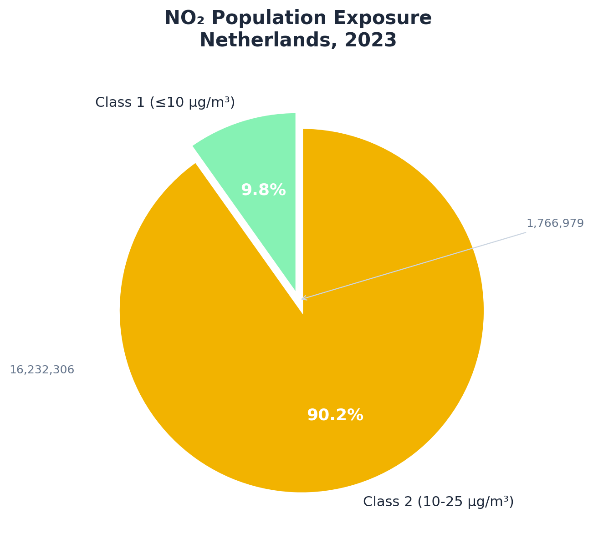
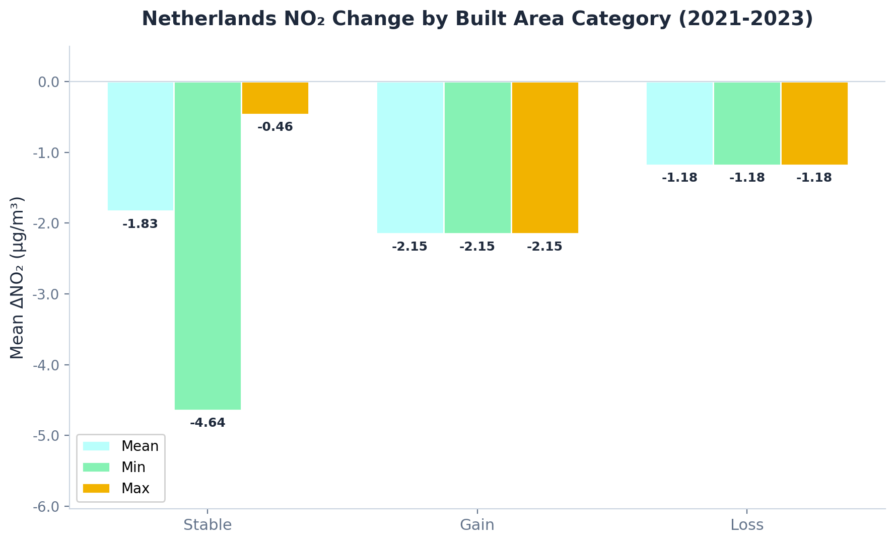
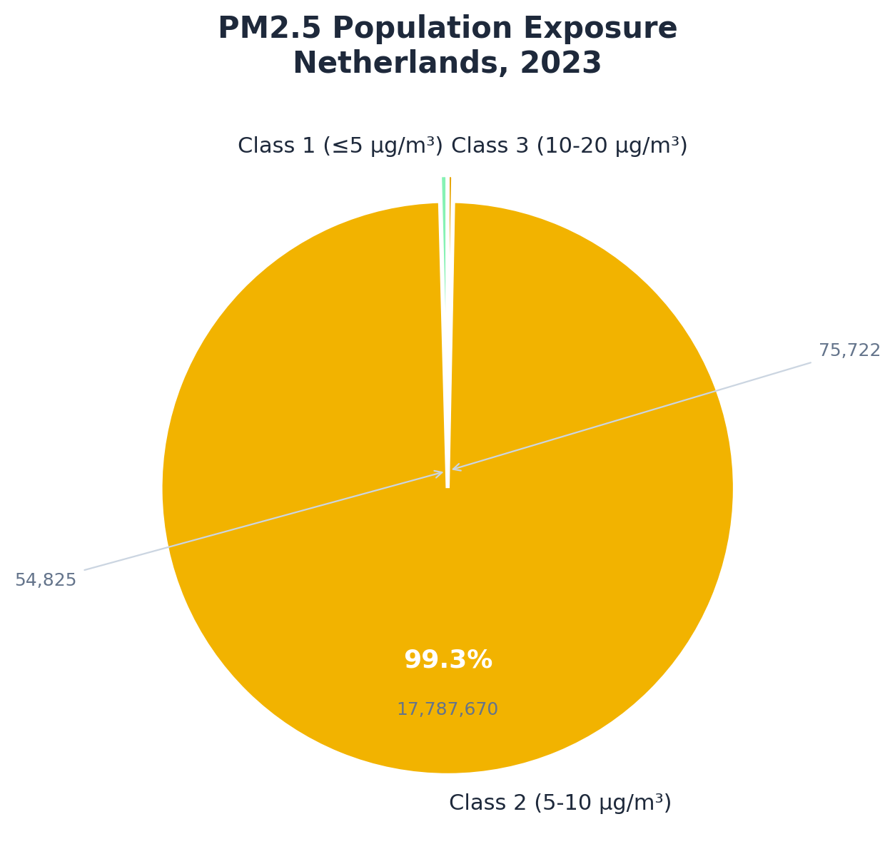
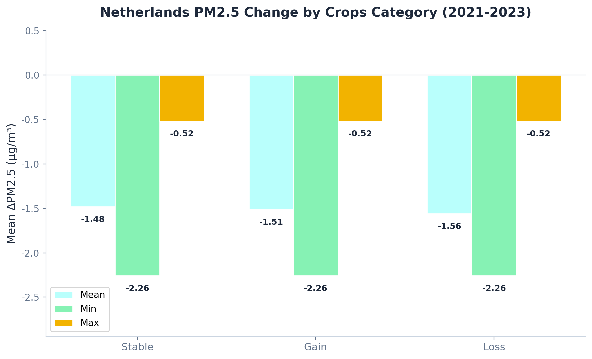
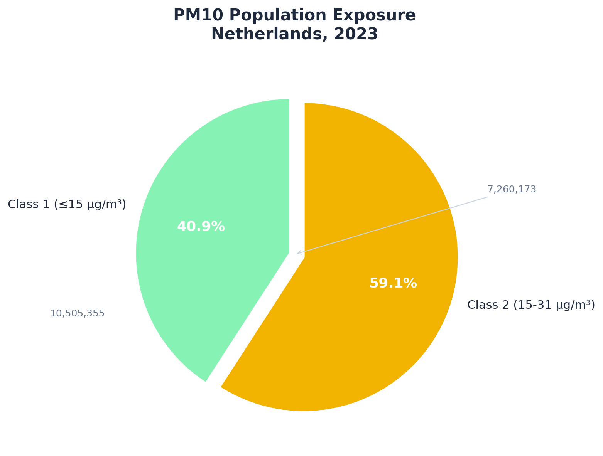
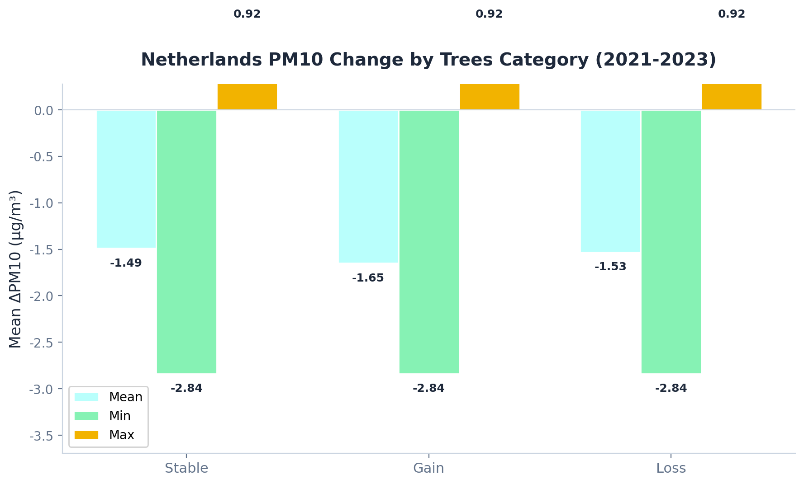

Lab Results
Overview of all GIS lab results: pollutant concentration maps, population exposure, land cover change analysis, and correlation statistics.
Pollutant Concentration & Population Exposure

Population Exposure to NO₂
90.2% of the population lives in Class 2 (10-25 μg/m³)

NO₂ Change by LCC Type
Min / Mean / Max per transition class (Built Area)
Exposure Summary
| EU Class | Population | % |
|---|
NO₂ LCC Zonal Statistics Detail
| Category | Mean (μg/m³) | Min | Max |
|---|---|---|---|
| Stable (Built → Built) | -1.8306 | -4.6435 | -0.4562 |
| Gain (→ Built) | -1.6669 | -2.1515 | -1.1822 |
| Loss (Built →) | -1.9892 | -3.2082 | -1.1281 |

PM2.5 Population Exposure
Population distribution across PM2.5 pollution classes.

PM2.5 Change by LCC Type
Min / Mean / Max per transition class (Crops)
PM2.5 LCC Zonal Statistics Detail
| Category | Mean (μg/m³) | Min | Max |
|---|---|---|---|
| Stable | -1.4828 | -2.2578 | -0.5185 |
| Gain | -1.5108 | -2.2578 | -0.5187 |
| Loss | -1.5644 | -2.2578 | -0.5185 |

PM10 Population Exposure
Population distribution across PM10 pollution classes.

PM10 Change by LCC Type
Min / Mean / Max per transition class (Trees)
PM10 LCC Zonal Statistics Detail
| Category | Mean (μg/m³) | Min | Max |
|---|---|---|---|
| Stable | -1.6533 | -2.8373 | 0.9198 |
| Gain | -1.5272 | -2.8375 | 0.9198 |
| Loss | -1.4873 | -2.8372 | 0.9198 |
Land Cover Change (2021-2023)
Land cover transition analysis using ESA WorldCover 10m data. Each student focused on a different land cover class.
95.74%
Stability (0.83 sq.deg)
63.77%
Gain: Class 5 → Built (507), 0.052 sq.deg
63.78%
Loss: Built → Class 5 (705), 0.024 sq.deg
| Indicator | Value (%) | Category | Area (sq.deg) |
|---|---|---|---|
| Stability (Persistence) | 95.74% | Built → Built | 0.8306 |
| Primary Source of Gain | 63.77% | Class 5 → Built (507) | 0.0521 |
| 2nd Source of Gain | 20.57% | Class 2 → Built (207) | 0.0168 |
| 3rd Source of Gain | 9.87% | Class 11 → Built (1107) | 0.0081 |
| Primary Destination of Loss | 63.78% | Built → Class 5 (705) | 0.0236 |
| 2nd Destination of Loss | 14.10% | Built → Class 11 (711) | 0.0052 |
| 3rd Destination of Loss | 12.42% | Built → Class 2 (702) | 0.0046 |
90.64%
Stability (0.50 sq.deg)
56.25%
Gain: Class 5 → Trees (502), 0.023 sq.deg
32.61%
Loss: Trees → Built (207), 0.017 sq.deg
| Indicator | Value (%) | Category | Area (sq.deg) |
|---|---|---|---|
| Stability (Persistence) | 90.64% | Trees → Trees | 0.4993 |
| Primary Source of Gain | 56.25% | Class 5 → Trees (502) | 0.0231 |
| 2nd Source of Gain | 24.91% | Class 11 → Trees (1102) | 0.0102 |
| 3rd Source of Gain | 11.17% | Class 7 → Trees (702) | 0.0046 |
| Primary Destination of Loss | 32.61% | Trees → Built (207) | 0.0168 |
| 2nd Destination of Loss | 32.24% | Trees → Crops (205) | 0.0166 |
| 3rd Destination of Loss | 27.94% | Trees → Class 11 (211) | 0.0144 |
95.33%
Stability (2.57 sq.deg)
41.36%
Gain: Class 11 → Crops (1105), 0.033 sq.deg
41.52%
Loss: Crops → Built (507), 0.052 sq.deg
| Indicator | Value (%) | Category | Area (sq.deg) |
|---|---|---|---|
| Stability (Persistence) | 95.33% | Crops → Crops | 2.5668 |
| Primary Source of Gain | 41.36% | Class 11 → Crops (1105) | 0.0332 |
| 2nd Source of Gain | 29.37% | Built → Crops (705) | 0.0236 |
| 3rd Source of Gain | 20.70% | Trees → Crops (205) | 0.0166 |
| Primary Destination of Loss | 41.52% | Crops → Built (507) | 0.0521 |
| 2nd Destination of Loss | 34.62% | Crops → Class 11 (511) | 0.0435 |
| 3rd Destination of Loss | 18.41% | Crops → Class 2 (502) | 0.0231 |